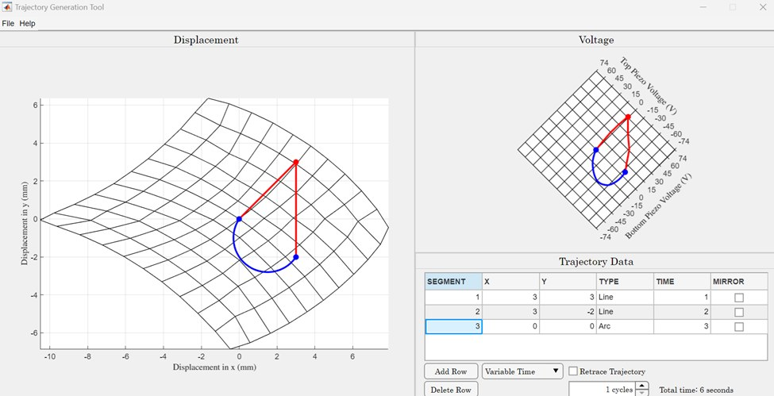
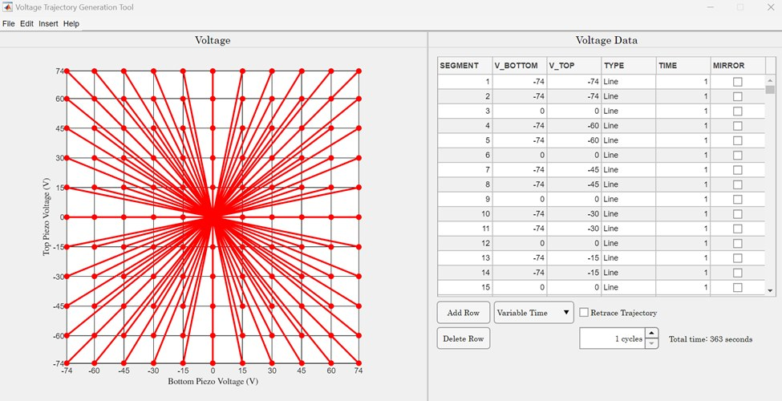
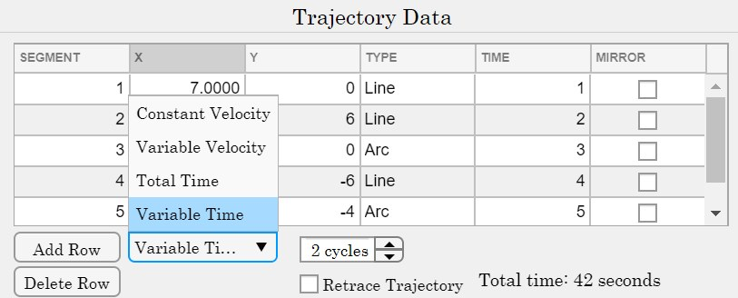
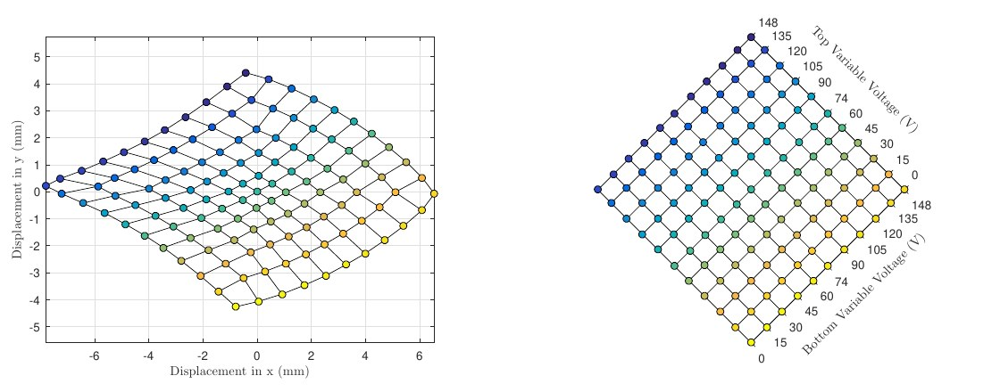

Results
I used the tools to map the robot's workspace and to build the test trajectories (workspace trace, circle and the letter Y) in my thesis.
Motivation
Testing the piezoelectric parallel robot meant running many trajectories, and each one needed the exact voltages for both actuators at every point. At first I built each trajectory by hand: I defined each segment, then looked up the required points on the input voltage grid for every displacement. Changing a path was tedious, each trajectory was tied to one set of input voltages, and a new robot iteration meant repeating the whole process. So I wrote two MATLAB tools to define the paths, check the inputs, and export signals for simulation and testing.
My role
I designed and built both tools in MATLAB and wrote their user manuals.
Skills
- MATLAB app development
- Trajectory planning (line and arc segments, time- or velocity-based)
- Data export for Simulink and ABAQUS
- Input validation and user documentation
The tools
- Voltage Signal Generation Tool: defines trajectories directly in terms of the voltages sent to each bimorph. I used it to find the robot's basic movements, map its workspace, and relate input voltages to output displacements.
- Trajectory Generation Tool: defines trajectories by the desired end-effector position, built from line and arc segments with time- or velocity-based timing. Progress can be saved, and the result is exported as time-series data for MATLAB, Simulink and ABAQUS.
Features
- Input sanitization
- Segment highlighting
- Linear and circular movements, with retrace and repeat options
- Import and export of trajectory definition files
- User manuals for each tool
Screenshots



